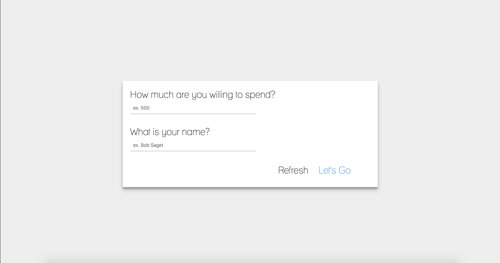

Viewfinder
Role: Side Project
Duration: In Progress
Overview
ViewFinder is one project that I am currently thinking of revamping. It was at first just an idea that came out of necessity: what can I do so that I can spend less time answering the same questions that revolve around “what camera should I buy?” Now, this is a very broad question, but most of the time people just want to get into photography, so they aren’t looking for something very specific. I typically found myself asking the same questions like “what is your budget? What are you trying to do with your camera? Do you like small or big cameras?” and others. With that, In my early years of college, I was brainstorming a sort of dialogue system that could help almost “automate” (with the use of some sort of decision tree or something) to help guide people the same type of conversation that I typically have. This is a very peculiar project to me since I started it, as it is something I revisit every so often, and I approach it at a different angle every time.
Process
This project first started off as an early exploration of me attempting to try different things, and one of them happened to be some sort of dialogue system. I never really got around to implementing the whole thing, but my goal was set out to be to make an application that would ask you relevant questions, and based on what you answer, it would give you a suggested camera. It should be noted that it would be a pre-curated list of cameras at the time, and it would be rather small.
Key Features:
- Progressive like workflow, guiding the user through a step by step process
- Q&A based interaction to help the user find the right camera
- Other features include: a “deal finder” and search function for cameras
- Various parts were created and multiple revisits
When I first started, I was really into making logos and stuff like that, so I first made a logo. I based it off of a just the name of this project, and I thought it was fitting: i’m helping someone find a camera, similar to a viewfinder (how cheesy). This first step was an early exploration of me trying to combine an illustration with words, and have them fit together nicely. I based it off of an actual DSLR viewfinder (from my trusty Nikon D600 at the time), and at first I just wanted to draw out the viewfinder and see how I could make it work with text. I counted the letters and tried to fit each letter as the focus points. Now, for what it’s worth, I was pretty satisfied with this first attempt, however there are two problems I can see arise: the gridlines could be kind of annoying when placed around or near text, and the one focus point between the “view” and the “finder” can be distracting. I tried removing the gridlines, but, to me, it gives away the context or visual hint that the logo is a viewfinder. The same goes with the actual focus point. Not sure how I would improve it right now, but this is an example of a design that could sit by itself, but not so well with other elements, so it it quite tricky as to where to place it.
After the logo was designed, I did a quick “test” as to making some sort of form. This was short lived as I did not spend too much time due to school, but it was worth an exercise to keep the dialogues short. I wanted to make an experience that would help a user step by step: I wanted to focus on breaking down something that could be easily done with a (huge) form of 5+ questions to something step by step and more bite-sized. I did not want to overwhelm the user, and I wanted to guide the user. This was also a time where I did not have too much experience with web design, so I just wanted to play around with input forms and styling.

Fast forward a year, and I sat down in a class where I had to prototype something: and I thought I could develop the project in a mobile sense. I only had a few days to do this, and it was one of my early attemps to “design” something in illustrator and string it together with Invision. Just to point out, I lost the invision prototype during my move back from college, but I can at least show the screens. I mainly tried playing around where I could fit the logo I made earlier in the designs, and I tried to keep each question to one page. The main influence was Airbnb’s step by step flow.
With each question, I wanted to show the progression of the steps with the dots on the bottom of each page. It’s not shown through these screens, but I also wanted to make these steps act like “cards” so every time a user advanced or went backwards, there would be some sort of swiping animation.
The rest of this application is quite trivial in a sense that I did not put too much time to think of it: I just added content that I thought a user would want, so these were my potential ideas to expand viewfinder: allow for searching of cameras (from my curated list), a help screen to give some background of the application, and a deal finder that would probably involve some google API or web scraping. I thought that these all would give the user some flexibility for their own exploration if they decided to opt out of this guided experience.
This is essentially where I left off, and I currently plan on revisiting this and improving it to something that I can possibly prototype and test out with Framer, and then bringing it to life.